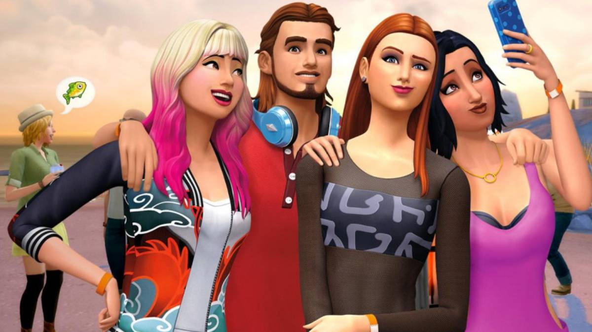
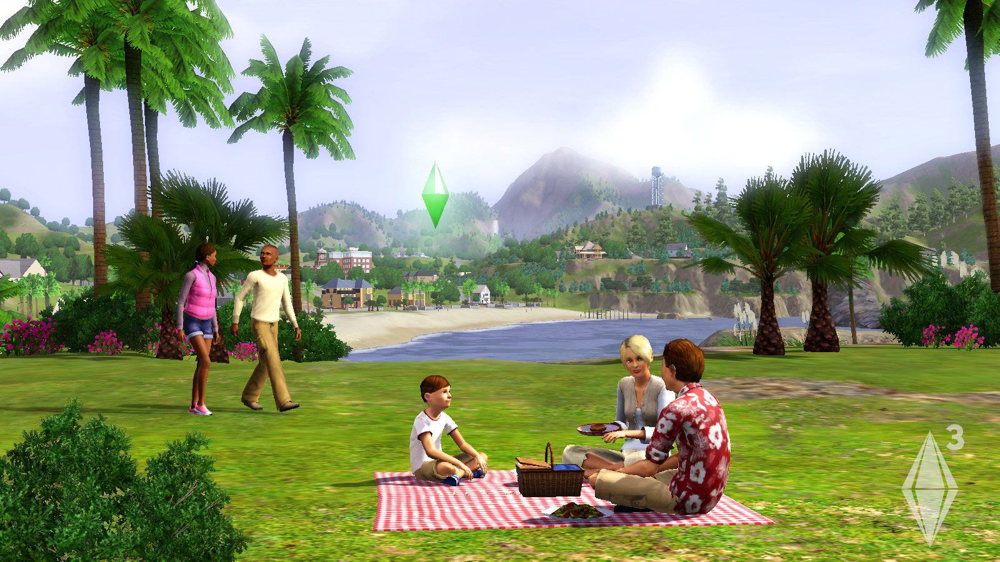
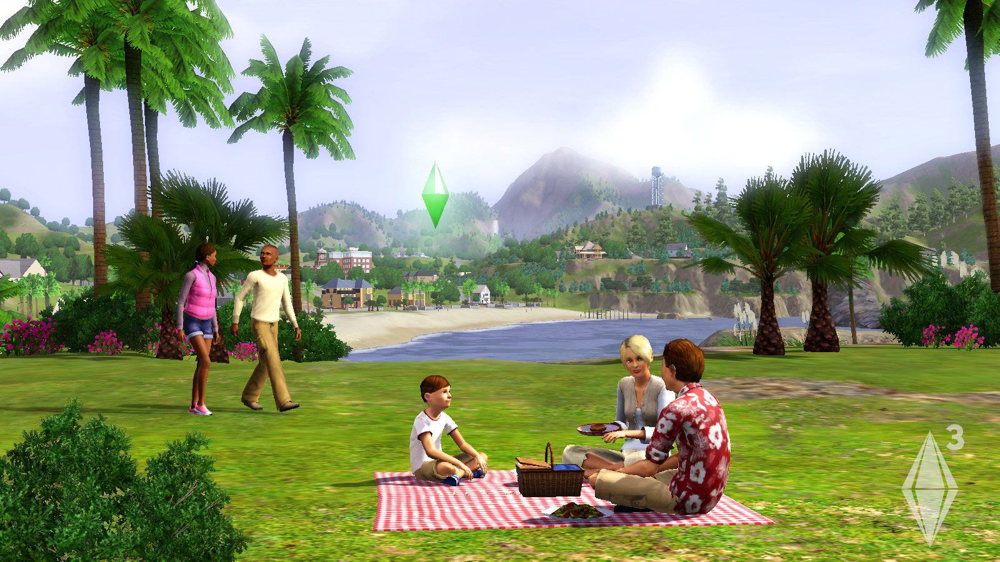
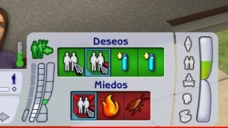

¿Qué son los sims?

Los Sims es un juego de simulación diseñado por Will Wright,desarrollado por Maxis (al principio) y lanzado por Electronic Arts en el año 2000.
Desde que salió, ha ido acumulando millones de fans alrededor del mundo y en todas sus plataformas. En la actualidad, la última versión de esta franquicia es Los Sims 4 (2014). Básicamente este juego consiste en un mundo virtual, dónde sus habitantes los sims, son creados por el usuario como así también su entorno. Con infinitas posibilidades de personalización tanto de tu sim como de su casa(solar), su barrio, familia, trabajo,etc.Conceptos básicos para entender el juego:
-Plumbob
Si empezamos a jugar o vemos jugar a alguien es lo primero que nos llama la atención ¿Para qué sirve ese “rombito”?.
Este nos indica que sim estamos utilizando y cómo se siente.
En rasgos generales, nuestro sims esta bien cuando el plumbob aparece en color verde, no muy bien cuando el plumbob está en amarillo y rojo cuando este esta muy mal.
 

-Necesidades
De la mano con el plumbob va la barra de necesidades.
Esta funciona de la misma manera y en simultáneo.
Los sims necesitan comer, higienizarce, ir al baño, divertirse, mantener el contacto con otros sims,entre otras.
Si tienen las necesidades muy bajas pueden morir.Por eso, hay que mantenerlas en verde(llenas/satisfechas) o, a lo sumo en amarillo.
*Nunca en rojo*
-Deseos
Como todos nosotros los sims también tienen deseos. Cuando los cumplen pueden cambiarlos por recompensas como: pociones de felicidad, mejores rasgos u otras ventajas.
Existen dos tipos de deseos:
1.Deseos de toda la vida: mucho más difíciles de cumplir pero con mayores recompensas. Por ejemplo: volverse una estrella de Rock llegando a un determinado nivel de una profesión.
2.Deseos temporales: aparecen por un determinado tiempo y son más fáciles de realizar. Por ejemplo: comprar un objeto, encontrar un trabajo.

-Expansiones
Nuestras posibilidades en los sims aumentan cuando agregamos DLC's o expansiones. De estas hay de toda clase.
Desde tener mascotas, añadir muebles, ir a la universidad hasta viajar al futuro o, por el contrario, a la Edad Media
Mi DLC/expansión favorita es el Sims 3 Medieval. Si quieren saber más sobre este los invito a hacer click acá.
A continuación voy a dejar los trailers de cuando salieron LS1 y LS4 para que se entienda un poco de mejor lo qué estaba hablando.
Trailers
*Acá podemos ver las notables diferencias entre el primer juego(Sims1) y el último(Sims4)*